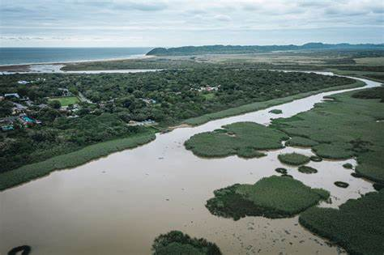
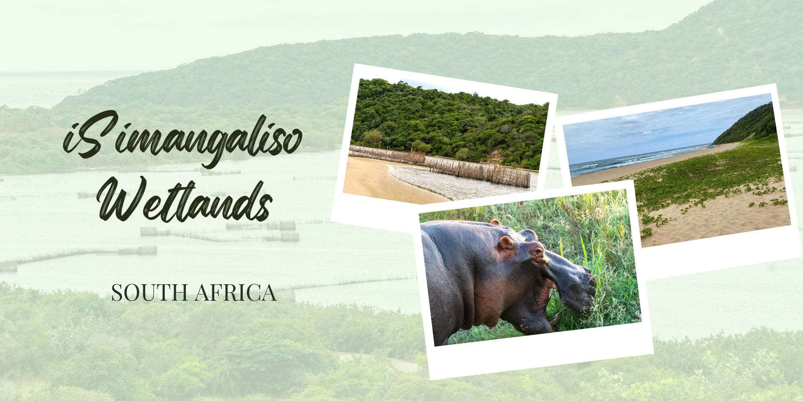

iSimangaliso Wetland Park
134 Reviews
Location: Main Road, St Lucia, KwaZulu-Natal, South Africa





UNESCO World Heritage Wetland Reserve
iSimangaliso Wetland Park is a unique ecological treasure offering visitors the chance to explore lakes, beaches, wetlands, coral reefs, and wildlife all in one destination. It is South Africa’s first World Heritage Site and one of KwaZulu-Natal’s most biodiverse regions.
Prices
Adult - R70 / day
Child - R40 / day
- Lake and Estuary Tours Discover the beauty of Lake St Lucia, home to hippos, crocodiles, and hundreds of bird species.
- Beaches & Coastal Dunes Enjoy pristine beaches and some of the highest vegetated dunes in the world along the Indian Ocean coastline.
- Marine and Wildlife Experiences Witness dolphins, turtles, and whales offshore while exploring game reserves teeming with land animals.
- Guided Safaris & Camping Experience unforgettable guided tours, camping, and eco-lodging within diverse natural habitats.
Located in northern KwaZulu-Natal, iSimangaliso Wetland Park spans over 3,280 km² of unmatched ecological diversity. Whether birdwatching, snorkeling, game driving, or relaxing near lakes and forests, this destination celebrates South Africa’s natural beauty and conservation legacy.
Add your comment here
Comments
Lindiwe Mokoena
Absolutely stunning! The estuary boat cruise and wildlife sightings were incredible!